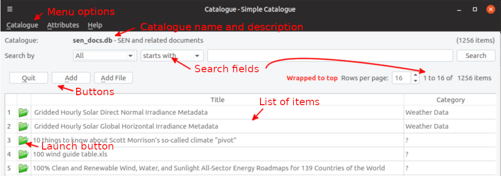
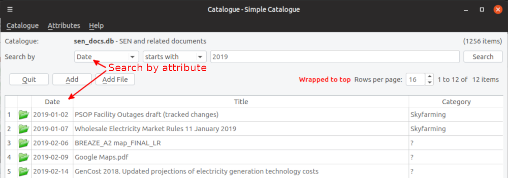

Simple Catalogue
A simple catalogue implementation.
Overview
This application is a prototype of a catalogue for holding information about “things”. It attempts to be as unspecific as possible to improve its usefulness.
The program uses catalogues which are stored in sqlite3 databases. sqlite3 databases are single files and require no additional programs or packages. By default each item has three attributes (fields):
- Title - the title for the item
- Location - location for the item. If the item is a computer file this is the folder (directory) the file resides in
- Filename - if the item is a computer file this is the name of the file
In addition, the item can be assigned to one or more categories via use of a category field and additional attributes can be defined using Meta attributes (see Creating a new catalogue below).
Installation and Execution
There is will be a packaged version for Windows available as a self-extracting zip file from https://sourceforge.net/projects/catalogue/ (the package has been created with PyInstaller). To install the package you can just open/launch it and extract it to your desired location. It may be necessary to execute the program as Administrator.
To execute the program open catalogue.exe in the catalogue folder. You can easily set up a Desktop shortcut to point to the program.
Creating a new Catalogue
You can create a new catalogue by choosing the Catalogue → New menu option. As part of the creation process there are a number of settings and options to adjust the catalogue to suite your needs. These are described briefly in Menu options and include:
- You can define a category attribute (field) for the catalogue to group items into a number of categories. These are the actions you need to do:
- Attributes → Settings Update these settings to define the category field:
- Category Field - Choose the name of the category field for the catalogue. For example, for a music catalogue you might call the category field Genre
- Category Choice - You can choose to allow multiple Category values for an item by setting this value to multi. The default is a single value
- Attribues → Category (the menu item will display the name of the Category field) Update the list of categories available. When adding or editing an item you will either be presented with a pulldown list if a single Category value is allowed or you click on the Category field to select multiple category values. For multiple categories pressing Ctrl+left mouse button allows you to select a set of individual values while Shift+left mouse button allows you to select a group of values
- You can define any number of additional attributes for each item by defining additional Meta fields.
- Attribues → Meta Update the list of attributes (fields) available. When adding or editing an item you will be presented with a window containing all attributes to be updated
- You can load a spreadsheet or CSV file into the catalogue by choosing Catalogue → Load. The load process will create attributes (fields) identified by the spreadsheet column names. If you're lading the data into a new catalogue you can use one of the spreadsheet column names to define the category attribute
Main Window
The application has a main window, as described below.

Menu options
The catalogue has a number of menu options.
| Catalogue |
Perform catalogue functions
| Open |
Open an existing catalogue |
| Add |
Add an existing catalogue into the list available |
| New |
Create a new catalogue and optionally load items into it from a spreadsheet or CSV file |
| Load |
Load items into a catalogue. You can choose a spreadsheet or CSV file containing a list of items to be added to the catalogue |
| Remove |
Remove a catalogue. You will be asked if you want to delete the catalogue |
 Quit Quit |
Exit the program. The list of catalogues will be saved |
|
| Attributes |
Manage catalogue attributes. Once selected you will be presented with existing attributes and be able to add or update these.
| Category |
You can store items in a number of categories. This option allows you to maintain the categories. The field name for the categories is chosen when you first load items into the catalogue (see Settings below) |
| Info |
There are two Info items which appear as a header line and provide the Catalogue name and description:
- Catalogue - the name of the catalogue database
- Description - a description for the catalogue
|
| Meta |
Maintain additional attributes that can be created for each item. Editing an item will display the list of attributes for update |
| Settings |
There are a small number of Settings for the catalogue, some of which control some aspects for computer files and folders.
- Category Choice - You can choose to allow multiple Category values for an item by setting this value to multi. The default is a single value
- Category Field - the name of the category field for the catalogue
- Decrypt PDF - the name of a program to decrypt simple encrypted PDFs when they're added to the catalogue. This currently only works for Linux and the qpdf command/program
- Launch File - if set this is the command that will be issued to open a computer file. The value for Windows is
start “” and for Linux /usr/bin/xdg-open/. To hide the launch column you need to set this to empty or delete the entry
- Translate Userid - if set any (or at least the first) occurence of the current userid will be replaced by this value. This may be useful if the database is shared by several users. A suggested value is
$USER$
- URL Field - Can be used to specify an Internet address (URL) field. If an item has no Filename value but does have a URL value a browser window will be launched to open the URL. If you add a Meta field called URL this setting will be updated to set that as a URL Field
|
|
| Help |
Display some help about the program
| Help (F1) |
Display the help file. The default help file, help.html, is a standard HTML file which can be displayed with your browser |
| About (Ctrl+I) |
Display details about the program including any licensing conditions |
|
Search fields
There are a number of search fields for items within the catalogue.
- The first field allows you to select a search attribute (field) or all attributes via a drop-down list
- The second field allows you to specify a search filter
- equal - items equal the search criteria for the chosen attribute
- starts with - chosen attribute values start with the search criteria
- contains - the chosen attribute contains the search criteria
- missing - select items with missing values for the chosen attribute
- duplicate - select items that have duplicate values. If you specify a search value duplicates must start with this value
- The third field allows you to specify a search value. If the search filter is 'starts with' and the search value is empty all items with the chosen attribute will be chosen. If you're searching for duplicate values (for example, locations) you can precede the search value with a '%' to find the search value anywhere
- Pressing the Search button will initiate the search. Often pressing Enter will also initiate the search
- Below the search fields there are details on how many items satisfy the search and which items are being displayed in the list
- If you're searching for missing Filenames you'll be presented with a list of items not found in the item's Location (folder). You can attempt to find the location for the file by doing a search of folders. If you click on the Launch button for the item you'll be presented with a menu to set the starting folder to search. The program will search all folders below that to find the missing file. If there is a single copy of the file, the program will update the Location for the item and launch the item. If there is more than one copy of the file you will be presented with a list of locations plus the size of each file enabling you to choose the correct copy
Buttons
There are three buttons:
- Quit - exit the program
- Add - add a new item. You will be presented with a window to allow you to add values for all attributes. The category value is selected by a drop-down menu
- Add File - add a new item from a file. You choose the file and will then be presented with the Add window. If the file is a PDF file, the program will attempt to populate some values from the file properties
List of items
The items satisfying the search criteria are displayed as a list one “page” at a time. The number of items displayed in a page can be adjusted by the Rows per page at the top of the list. You can navigate the list via either the scroll-bar on the mouse or using Page-Up or Page-Down. The list will display the Title and the Category for each item. If appropiate the list will also display the Search by attribute. If there is a value for the Launch button a button will be displayed for each item, either an open button () or, if there is a URL attribute, a browser launch button (). Pressing the button will launch the application for the chosen item. To delete an item you right click on the number to the left of the item in the list.
